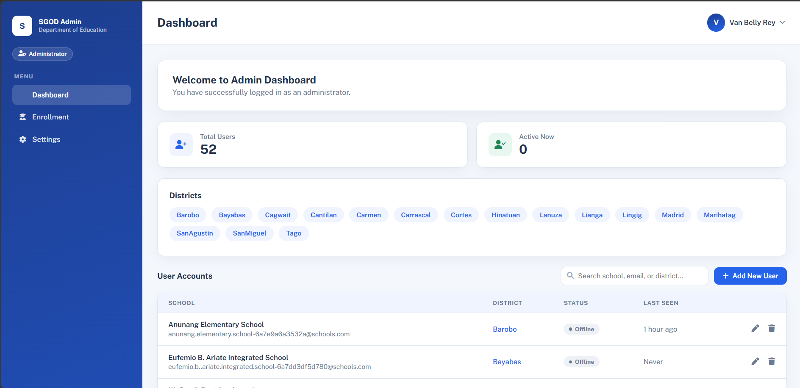
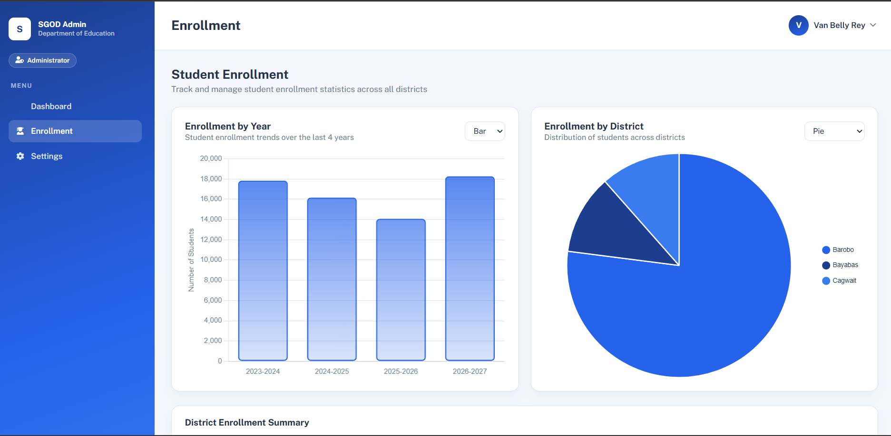


HELLO, I'M
Passionate about problem-solving, continuous learning, and building practical digital solutions. I enjoy using technology to improve workflows, solve challenges, and create user-friendly experiences.
GET TO KNOW ME
I am a recent Computer Science graduate with a strong passion for technology, continuous learning, and problem-solving. Throughout my academic journey, I have developed a strong foundation in logical thinking, attention to detail, and finding practical solutions to different challenges.
I enjoy working with technology, learning new tools, improving workflows, and taking on new challenges. My background has also helped me develop valuable skills in communication, organization, adaptability, teamwork, and critical thinking.
I am eager to contribute to a professional environment where I can apply my existing skills, continue learning, and deliver reliable, high-quality results. I am open to opportunities where I can grow, collaborate with others, and make a meaningful contribution.
I approach challenges logically and look for practical solutions.
I am comfortable learning new tools and adjusting to new environments.
I actively seek opportunities to improve my knowledge and skills.


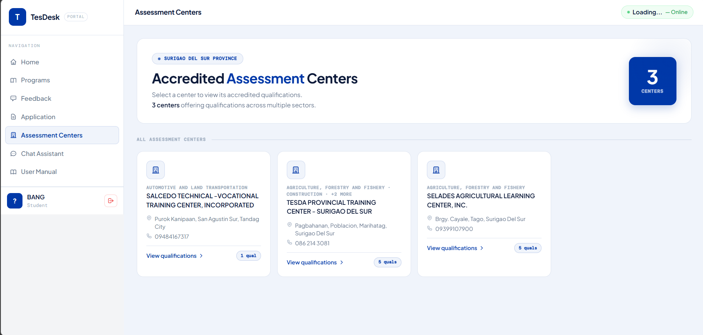
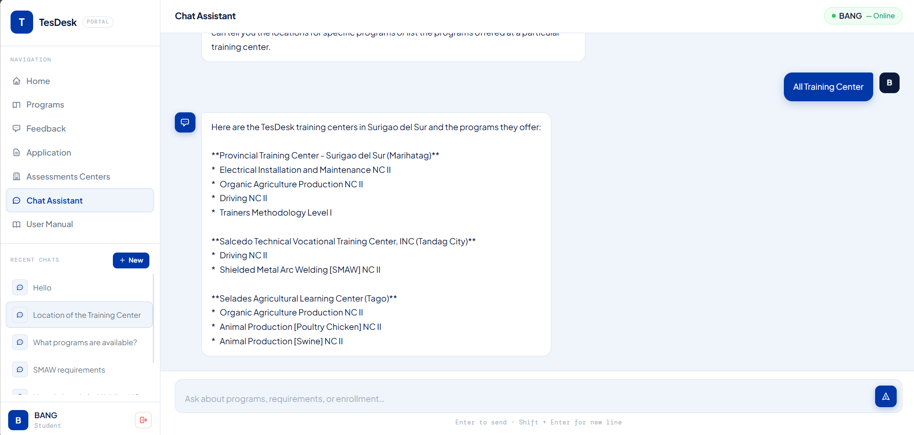
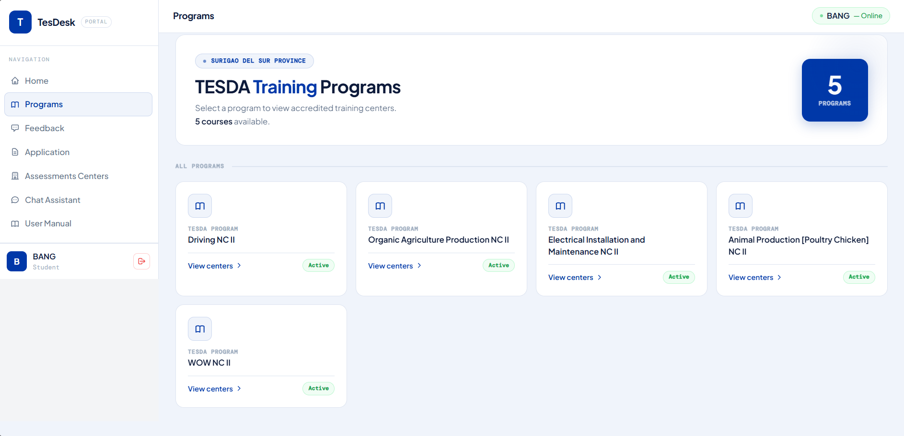
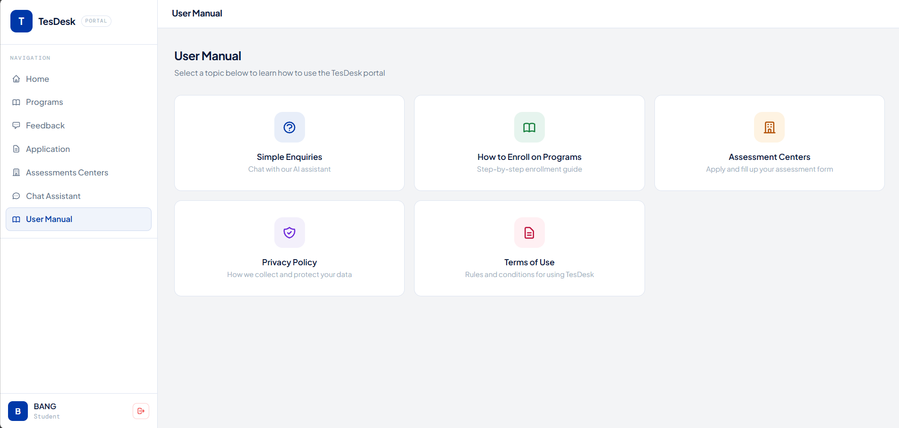
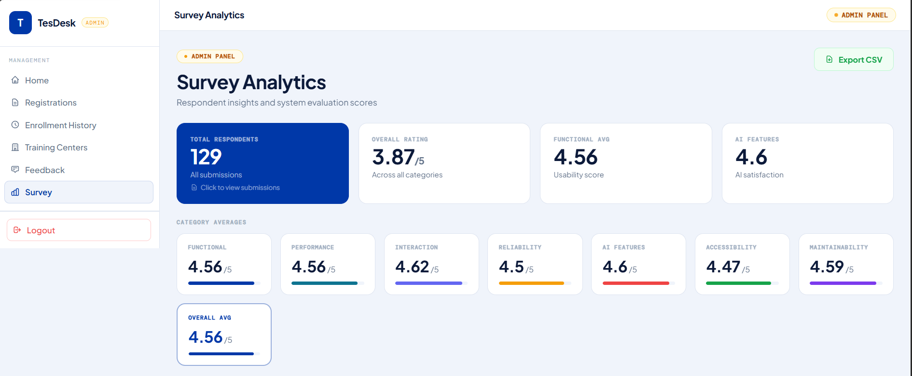
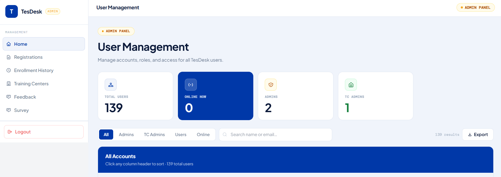
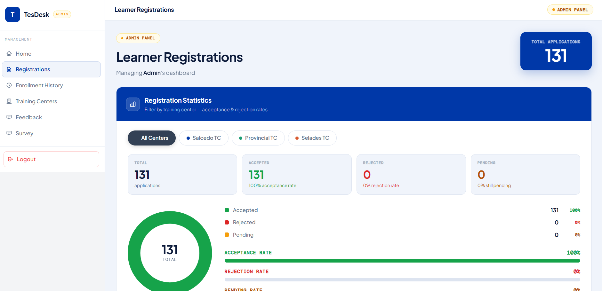
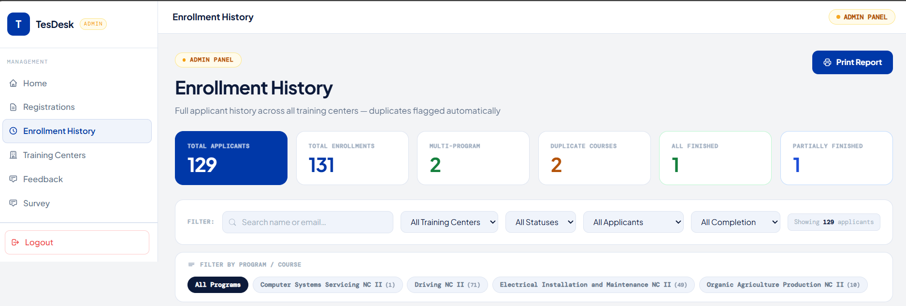
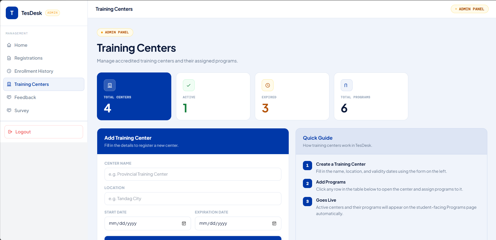